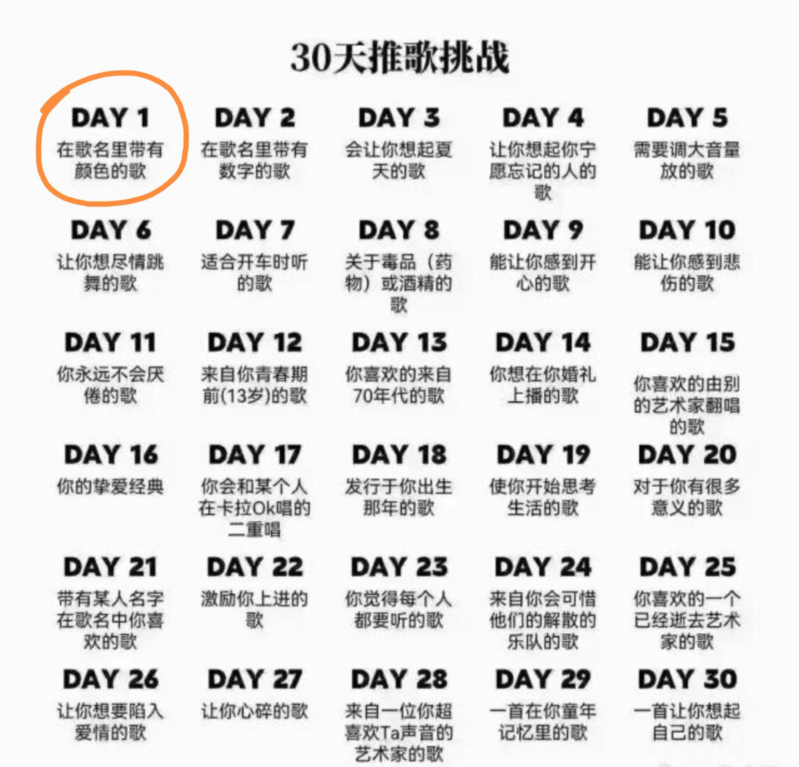
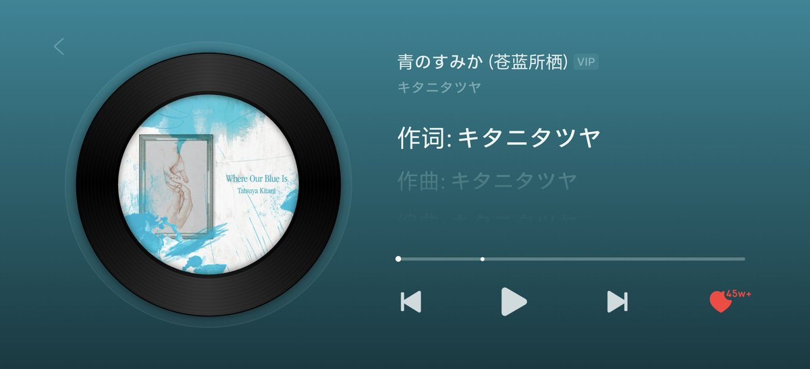

MysticOrange🌆
@Orange_Chr1s
@WhitesugarC 哇哇哇，都开始了☺️


Whatasigers
@WhitesugarC
我也来 30 天推歌挑战。我的音乐喜好几乎只有 J-POP 和纯音乐，于是这 30 首估计也会如此。
Day 1 歌名里带有颜色的歌
「青のすみか」- キタニタツヤ
第一感其实是「群青」，但有点太热门了。于是选了「青のすみか」。歌手也是最近才发现的宝藏，有一种老成的少年音，爱不释耳。 https://t.co/fyjB1zfNjY